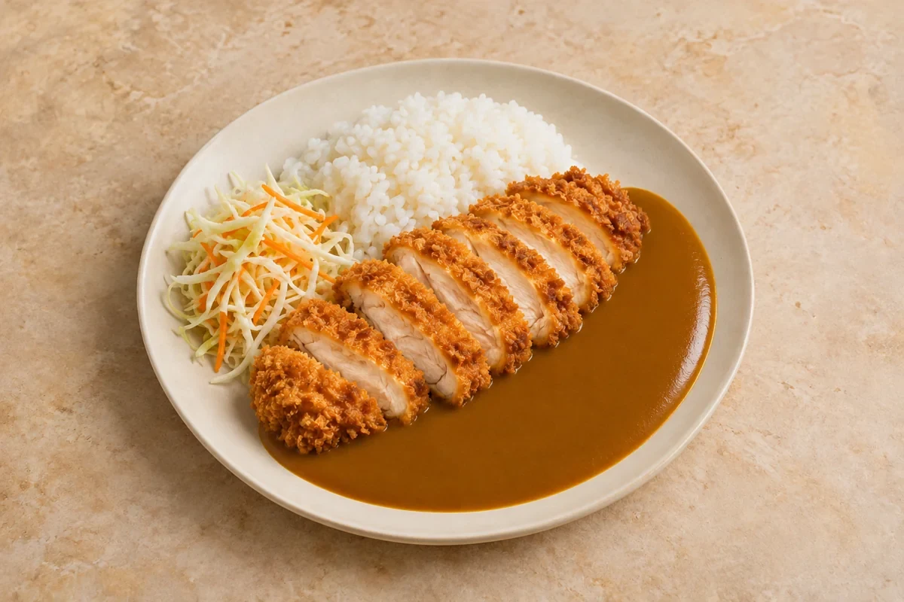

Jerk chicken, coconut rice & peas, lime slaw
Includes the 20-minute chicken marinating time. Sides included in the recipe.
Rice & Bowls
Crisp panko chicken breast, a gently spiced homemade curry sauce and crunchy rice-vinegar slaw. Everything for the plate is included.
Estimated total: About 45 min totalSides included in the recipe.
Ingredient quantities update automatically

Keep chicken, sauce, rice and slaw separate. Cool the cooked chicken and sauce and refrigerate within 2 hours; use within 48 hours. Cool rice quickly, ideally within 1 hour, refrigerate and use within 24 hours. If stored together, follow the rice’s shorter limit.
Freeze cooled chicken and sauce separately; the crumb will soften. Rice can be frozen promptly after rapid cooling. Make the slaw fresh. Defrost in the fridge and use within 24 hours.
Reheat cooked chicken, sauce and rice only once until steaming hot throughout. An oven helps crisp the chicken. Keep the slaw cold.
Use vegetable stock and firm tofu for a meat-free variation. At fractional servings, beat a whole egg and measure the required fraction for coating; buy a whole egg rather than a fraction.
Cool cooked leftovers in small portions and refrigerate within 2 hours. Keep the fridge at 0–5°C and the freezer around −18°C. Freeze suitable leftovers promptly. Defrost fully in the fridge and use within 24 hours. Reheat only once, until steaming hot all the way through. Follow any shorter use-by or opened-pack instructions; using older cooked ingredients does not restart their storage time.
Food-safety guidance: Food Standards Agency: chilling and freezing · reheating leftovers.